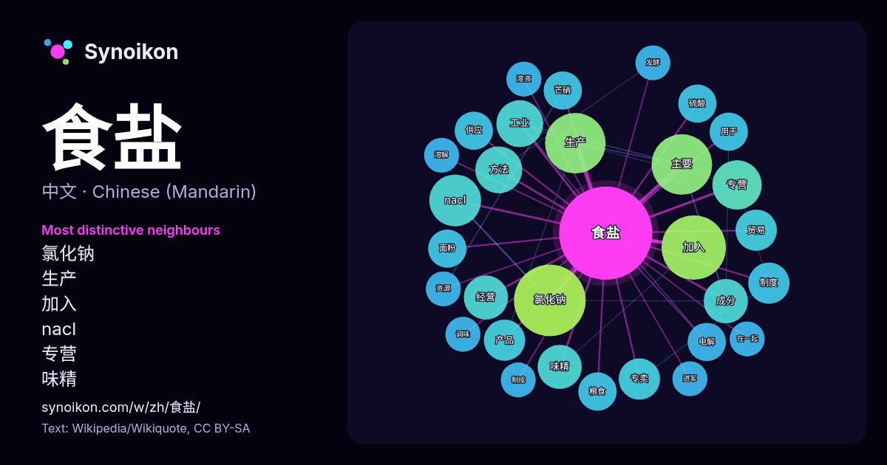

中文 · 每日一词列表
食盐
“salt” · 来自维基百科, Wikiquote 340 次出现中其周围的词。

最具特色的邻近词
- 氯化钠 22×
- 生产 13×
- 加入 13×
- nacl 12×
- 专营 11×
- 味精 9.0×
- 工业 8.7×
- 成分 8.5×
- 经营 8.4×
- 主要 8.1×
- 专卖 8.0×
- 方法 7.5×
- 贸易 7.3×
- 产品 7.1×
- 芒硝 7.0×
- 电解 7.0×
- 面粉 6.9×
- 硫酸 6.9×
- 粮食 6.8×
- 供应 6.8×
× = 比维基百科普通文本中多出的倍数。
最常见的邻近词
- 氯化钠 21
- 加入 17
- 主要 15
- 生产 15
- nacl 11
- 专营 10
- 工业 9
- 方法 9
- 味精 8
- 成分 8
- 经营 8
- 专卖 7
- 中国 7
- 产品 7
- 制度 7
- 贸易 7
- 通常 7
- 供应 6
- 政府 6
- 用于 6
上下文
- 含碘食盐（英語：iodised salt），俗称加碘盐、碘化盐或碘盐，是一种加入了少量含碘盐类（如碘酸钾）的食用盐。通过消化其中的碘化物可以预防食用者的碘缺乏病（IDD）。 碘是一种人类乃至各种生物所必须的微量元素，人们通常可以在多种食物来源中摄取。但碘在土壤中的含量因地方而异，在土壤碘含量低下的地 Wikipedia snippets · 含碘食盐
- 海盐是从海水中分离出的食盐，一般由晒干海水以制取。其作用与普通精制食盐类似，可用于烹调和化妆。虽然很多精盐也来自海盐，但并未表明为海盐，颗粒细小。市售海盐一般颗粒较大，价钱比一般的食盐要贵很多。和精盐相比，海盐的主要成分也是氯化钠，并没有证据显示其对人体有特殊的好处；此外，未作处理的海盐中缺乏碘， Wikipedia snippets · 海盐
- 产自巴基斯坦东部旁遮普省克乌拉盐矿（英语：Khewra Salt Mine）的石盐。可食用，也可用於装饰用途。 没有科学证据能证明喜马拉雅盐相比普通食盐对人体有更多的好处，因此任何声称喜马拉雅盐对人体有特殊益处的说法应被视为市场营销或伪科学。 由于大量喜马拉雅盐被低价出口到印度再加工后售出，赚取大量 Wikipedia snippets · 喜马拉雅盐
- 盐业专卖曾於世界多處實施，例如：古羅馬、印度及中國等；通常是指食盐销售統由政府垄断、限于政府授权私人经营、或者由公家统一收购等垄断制度。在古代，鹽業專賣通常為強勢政府控制財源的絕佳方式之一，比方歐洲羅馬就曾利用食鹽專賣控制所轄領域，20世紀的英國，也曾於印度殖民地實施食鹽專賣。不過也因為鹽業專賣容易造成市場供需不均 Wikipedia snippets · 盐业专卖
- 还有一种方法是，电解饱和食盐水的同时，往其中通入过量二氧化碳 2 NaCl + 2 H2O + 2 CO2 -通电→ 2 NaHCO3 + Cl2↑ + H2↑ 在此反应中，电解生成碳酸氢钠和氯气、氢气。 碳酸氢钠的工业制法为侯氏制碱法： NaCl+NH3·H2O+CO2==NaHCO3+NH4Cl 向吸满氨气的饱和食盐 Wikipedia snippets · 碳酸氢钠
- 食盐经营权，形成了食盐的封闭流通体系。食盐生产企业必须经省盐务局分配生产计划，产品不得自主进入市场。 随着，中国的经济发展，食盐的重要性下降，食盐专营制度的必要性也日趋微弱。但在1990年代，为消除碘缺乏病，中华人民共和国卫生部规定食盐中必须加碘。1996年5月，中华人民共和国国务院颁布《食盐 Wikipedia snippets · 中國鹽業史
- 鹽水是在水（溶剂）中加入了盐类（溶质，比如食盐）后形成的溶液。 鹽水功能非常的多樣化，在此一一介紹。 當家中有灰塵或污垢時，在骯髒處潑上一些鹽水，即可達到殺菌的效果，原理為利用鹽水的滲透壓，令細菌失去水分。另外如果家中大掃除時在角落灑一些鹽水，也可以避免蟑螂及其他蚊蟲的侵入。 Wikipedia snippets · 鹽水
- 滴，使瓶口上方出现酸雾。盐酸是胃酸的主要成分，能够促进食物的消化，并抵御微生物的感染。 16世纪，利巴菲乌斯正式记载了纯净盐酸的製造方法：将浓硫酸与食盐混合加热。在他之后，格劳勃、普利斯特里、戴维等化学家也在他们的研究中使用了盐酸。 工业革命期间，盐酸开始大量生产。化学工业中，盐酸有许多重要应用，对 Wikipedia snippets · 盐酸
更多词
于 2026-10-09 以默认设置预先计算（±5 个词，中等语料）。交互式图可用实时数据刷新。
界面为机器翻译，欢迎指正。